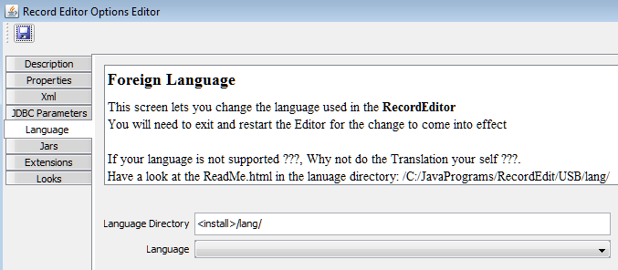

Foreign Language Translations
The RecordEditor now support Foreign Language Translations using the GetText Utilitity
(see Windows
or Linux). Currently the help screens are all in English,
I will be looking at that in the future.
There are number of packages / services for PO files:
- TM DB is a translation tool that supports po files.
- poedit and Better pos editor
are editors for po files.
- Eclipse users could try GTED (GetText Editor) for editting po files.
- po discussion lists a lot of tools that can be used with po files.
- pepipopum used to offer automatic translation of po files (using google translate).
In the Sample directory there are the following files:
| File | Description |
| ReMsgs_*.po | Sample Translations source files created using Google Translate.
These all need updating. The RecordEditor can now has a very basic po file parser (po file must use encoding=utf8) and can use po file
directly. Due to limitation with the po parser, the RecordEditor may not display the text correctly, but it should be good enough
for a translator to work with. If there is both a class and po file, the RecordEditor will use the
most recent file.
Problems with the Google Translation include
- Mis-Translations, Some words in English (i.e. Record) have multiple meanings and the
Google-Translate may pick the wrong meaning
- Poor translation - A computer does not translate a human language like a person would.
- Some messages contain HTML tags; these have been completely screwed up by the
translation service.
Note: There is now a special message TranslationStatus where you
can give status of the Translation. This is displayed when the RecordEditor starts.
Once you are happy with the translation, set it to "".
|
| msgfmt_GenerateResourceBundle.rexx/bat/sh | Rexx / bat / shell scripts to convert ReMsgs_*.po
to ReMsgs_*.class. This step requires a java compiler !!!. The options are:
- Install the Java JDK (Java Development Kit) or Java SDK (Software development kit).
A normal java installation does not include the java compiler javac. You will also need to either add the java jdk/sdk tools
directory to the program path variable or setup a JAVAC variable that points to the compiler.
- Look at Jikes compiler. Again you will need to setup a JAVAC variable.
- Use the Eclipse Java compiler (ECJ), comes with Eclipse-JDT; I do not know of any standalone downloads. You would need to setup
a JAVAC variable.
The gettext msgfmt program will call the Java Compiler (javac - SDK) program to compile the generated "Resource Bundle".
There are sample rexx/bat/bash scripts to convert the po file into a java class file.
Basically the scripts do (where tst is the foreign-language being generated and TextItems.tst.po is the input file) :
msgfmt --java -d . -r ReMsgs -l tst TextItems.tst.po
|
Format of the RecordEditor PO Files
Each text translation will consist of:
- One or more comments lines starting with a #. In the RecordEditor po files, the typically comments will be a
- A Use: line this lists how the Text is used; possible values are "Unknown", "Message",
"Action" (Primary / Right click Menu item), "Menu", "Column_Heading",
"Frame_Heading", "Field_Prompt", "Button", "Tab_Heading",
"Combobox_Entry", "Field_Hint", "External" (External File / External package / Database).
- A Id: Panel: Lists the lookup id (if not the Exglish text) and the panel used (if known).
- A description line which is mostly blank, But for
- Program Message Contains a description of the message
- Combobox items Indication of which combobox it is use in
- Table column heading Indication of the columns
- Tab Box's Indication of which Tabn box
- A English: line, Lists the original English Text (if it is different from the lookup key). This may contain variables
in the form {0}, {1}, {2} etc, these will be substituted with actual values by the RecordEditor. You should use these
same variables in your translated text. Also any text ending with : will probably have some error-message / object / text added to it
by the RecordEditor.
- A msgid line this holds the text the RecordEditor will look for. In most cases it will be the original "English".
The Exceptions are - Very large Text fields, Actions (Menu entries) and Values coming from external source (Database, Xml, Other packages).
This field may contain variables in the form {0}, {1}, {2} etc, these will be substituted with actual values by the RecordEditor.
You should use these same variables in your translated text. Also any text ending with : will probably have some error-message / object / text added to it
by the RecordEditor.
- A msgstr where you enter the Translation
- One or more blank lines
Following are 2 sample Text entries:
378
379 # Use: Field_Hint
380 # id: Panel:
381 # RecordBtns 3
382 msgid "Last Record"
383 msgstr "!!Last Record!!"
384
385 # Use: External
386 # id: Copybook_Writers_0 Panel:
387 #
388 # English: RecordEditor (Tab) CSV
389 msgid "Copybook_Writers_0"
390 msgstr "!!RecordEditor (Tab) CSV!!"
See GetText po Format for a
description of PO files. There are many Text editors that can highlight po files (e.g. jEdit + some unix editors).
Changing the Language in the RecordEditor
To select your new language definition:
- Select Edit options
- Select the language tab.
- On this screen you can change the directory where "language translations" are loaded from and
the language to use. The program looks for files starting with ReMsgs_ and ending with .class.
The program is Case sensitive at present.
